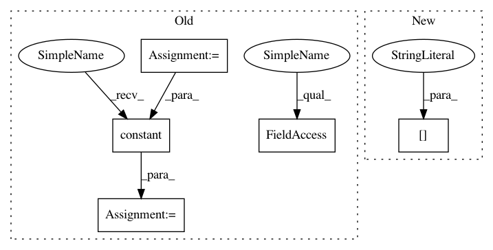

b3ef7ae9d3c1f6cfc9a202255ed2aa6b9d2aa791,research/delf/delf/python/feature_extractor.py,,PostProcessDescriptors,#Any#Any#Any#,334
Before Change
if use_pca:
// Load PCA parameters.
pca_mean = tf.constant(
datum_io.ReadFromFile(pca_parameters.mean_path), dtype=tf.float32)
pca_matrix = tf.constant(
datum_io.ReadFromFile(pca_parameters.projection_matrix_path),
dtype=tf.float32)
pca_dim = pca_parameters.pca_dim
pca_variances = None
if pca_parameters.use_whitening:
pca_variances = tf.squeeze(
tf.constant(
datum_io.ReadFromFile(pca_parameters.pca_variances_path),
dtype=tf.float32))
// Apply PCA, and whitening if desired.
final_descriptors = ApplyPcaAndWhitening(final_descriptors, pca_matrix,
pca_mean, pca_dim,
pca_parameters.use_whitening,
pca_variances)
// Re-normalize.
final_descriptors = tf.nn.l2_normalize(
final_descriptors, axis=1, name="pca_l2_normalization")
After Change
pca_parameters["mean"],
pca_parameters["dim"],
pca_parameters["use_whitening"],
pca_parameters["variances"])
// Re-normalize.
final_descriptors = tf.nn.l2_normalize(
In pattern: SUPERPATTERN
Frequency: 3
Non-data size: 5
Instances
Project Name: tensorflow/models
Commit Name: b3ef7ae9d3c1f6cfc9a202255ed2aa6b9d2aa791
Time: 2020-06-12
Author: dan.anghel@gmail.com
File Name: research/delf/delf/python/feature_extractor.py
Class Name:
Method Name: PostProcessDescriptors
Project Name: tensorflow/models
Commit Name: b3ef7ae9d3c1f6cfc9a202255ed2aa6b9d2aa791
Time: 2020-06-12
Author: dan.anghel@gmail.com
File Name: research/delf/delf/python/feature_extractor.py
Class Name:
Method Name: PostProcessDescriptors
Project Name: Microsoft/nni
Commit Name: 55b557f17385ca10b8a3e8fb8bbb0d3799906db5
Time: 2019-11-20
Author: 38930155+chicm-ms@users.noreply.github.com
File Name: src/sdk/pynni/nni/compression/tensorflow/builtin_pruners.py
Class Name: FPGMPruner
Method Name: _get_min_gm_kernel_idx
Project Name: NifTK/NiftyNet
Commit Name: 984d17836d7a6240942cd44f2f61c92a427bb9bb
Time: 2018-04-24
Author: z.eaton-rosen@ucl.ac.uk
File Name: niftynet/layer/crop.py
Class Name: CropLayer
Method Name: layer_op